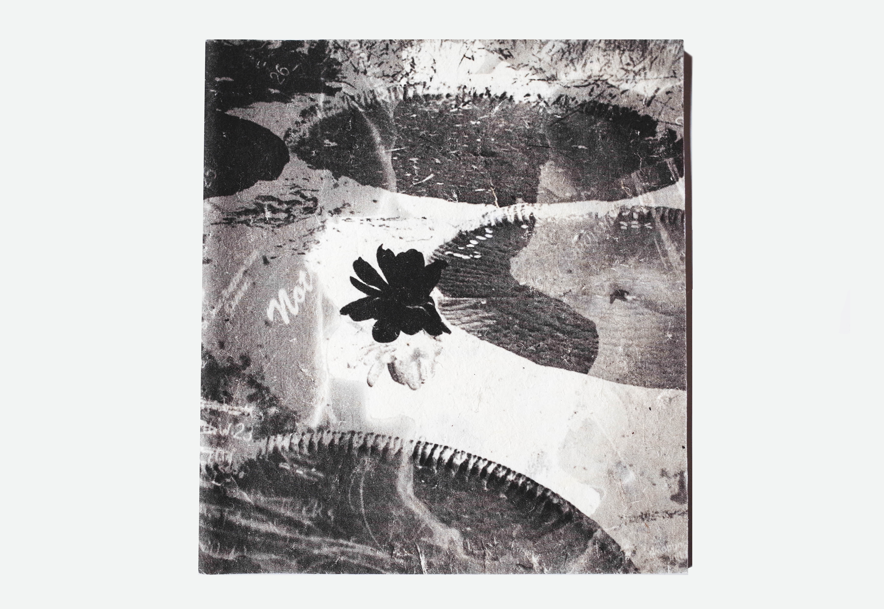

Maxwell Stern & Timothy Dilich

Paradox Lost is a fusion of illustration and experimental fiction by Maxwell Stern and Timothy Dilich. Three short stories peek into the individual experiences of a soldier, a prisoner, and a nostalgic elder. With such themes as revenge, isolation, optimism, and freedom of choice, Paradox Lost emphasizes the human condition, once known but soon forgotten in the face of immediate reality. What is lost is never found for nothing is ever had.
Item available for purchase upon contact.
Genre: Zine / Experimental Micro-Fiction / Illustration
Cover Art: Timothy Dilich / Maxwell Stern
Writing: Maxwell Stern
Illustration: Timothy Dilich
Specs: 32 pages / 4.75" x 5"
Release: Summer 2012
Limited Edition: 1st of 100